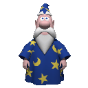
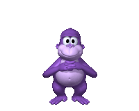
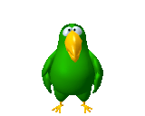
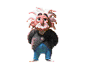
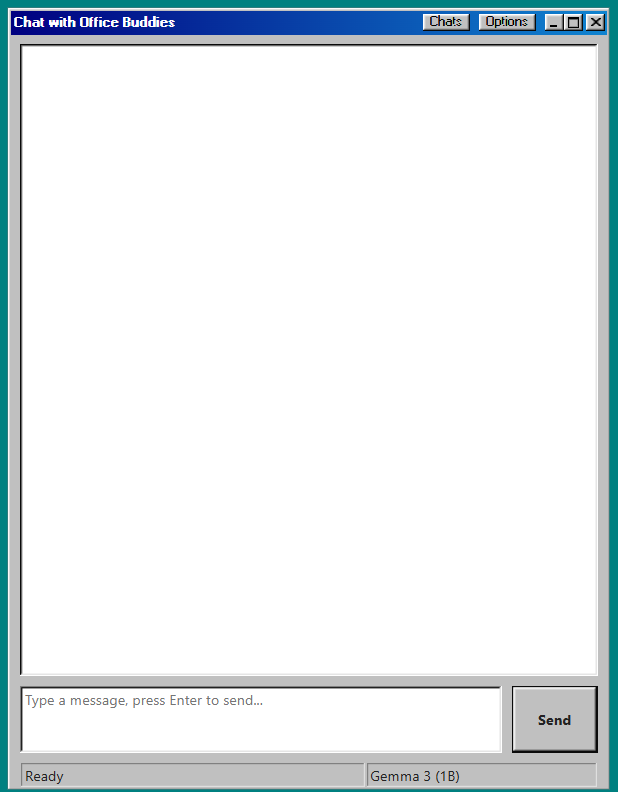
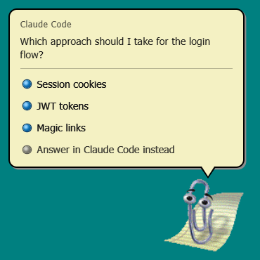
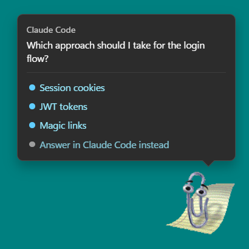
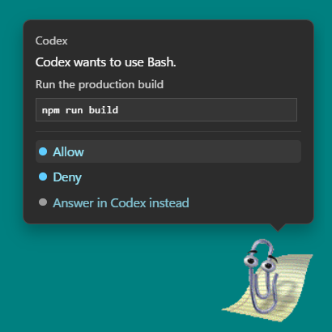

Runs on your machine
Chat with GGUF models through llama.cpp. Gemma 3 and Qwen3 download on demand, or load any model file you like.
It looks like you're about to use AI…
Clippy, Merlin, Bonzi and the whole classic cast are back on your desktop, powered by local models or the AI provider of your choice. Free and open source.
Chat with GGUF models through llama.cpp. Gemma 3 and Qwen3 download on demand, or load any model file you like.
Optional OpenAI, Google, Maritaca, OpenClaw and Hermes backends, selected in Settings.
Define, summarize, simplify or rewrite selected text with Win+F2 to F5, answered in a classic speech balloon.
Claude Code and Codex ask questions and request permissions through the balloon. Answer or Allow/Deny without leaving your work.
Schedule tasks in plain language right from the chat.
Pin notes and docs, or connect MCP servers, Confluence and Notion as read-only knowledge sources.






Switch in Settings > Appearance > UI Design. The chat is laid out like Windows Messenger in every theme.


POST http://127.0.0.1:5050/agent-event?agent=custom
{
"agent": "Deploy Bot",
"kind": "question",
"questions": [{
"question": "Deploy to production?",
"options": ["Yes", "No"]
}]
}Claude Code and Codex hooks install from Settings. The listener only accepts connections from this computer, and every hook carries a private token.
Windows installer (.exe), macOS (.dmg/.zip) or Linux (.deb/.rpm). Windows is the primary target; the global Win+F* shortcuts are Windows-only.
git clone https://github.com/kadmielp/Office-Buddies
cd Office-Buddies
npm install
npm start